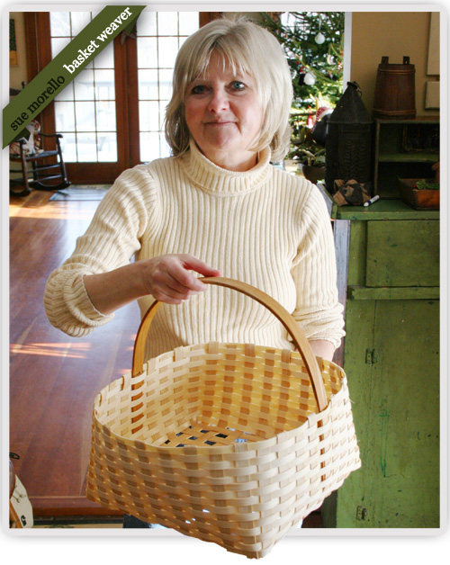
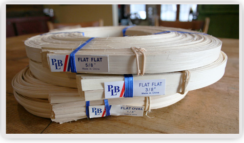
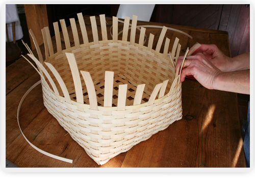
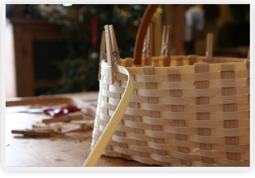
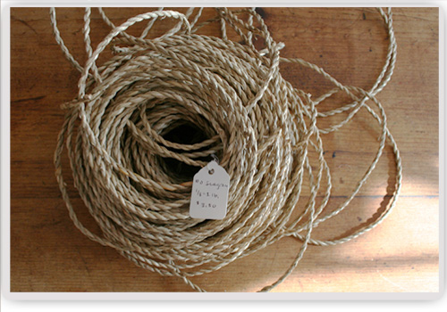
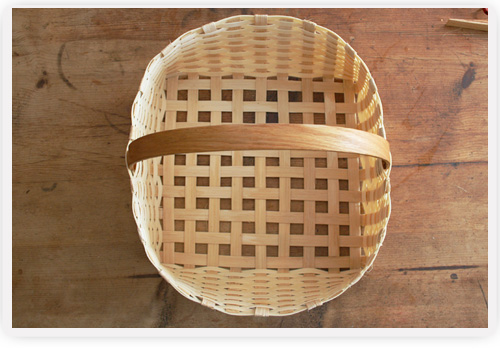
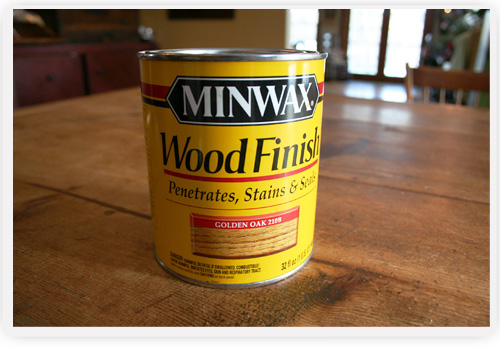

Baskets Overview
The baskets made at Sheldon Farms are in a shaker style.

They range in size from 3” to 30” in diameter.
The spokes that make up the base of the basket are made of ash wood as are the weavers. The weavers are 3/8” wide and are woven to make the sides of the basket.

The bottom spokes are usually 5/8” wide. The bottom is woven first and then the weavers are woven in to make the sides. When the bottom and sides are finished, I cut the inside spokes and fold over the outside spokes to finish the top of the basket.


I always use sea grass before lashing to have a finished look.

The handle is put in at this point. The handles are generally made of oak. The last step is to lash the basket which holds the handle in tightly and finishes off the basket.

The baskets are always stained to protect them from mold and to give them a warm look. All of my baskets are handmade and woven with care. If you purchase one; I hope you will enjoy it for many years to come.

View the links on the right to learn more about Sheldon Farm Baskets and how they're made.
View Our Online Shop